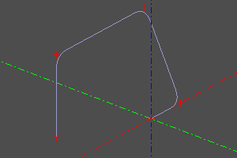
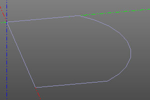
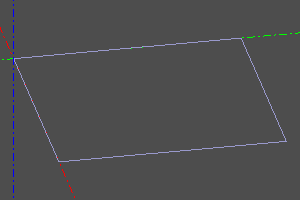

Линии и циклы.
Во многих случаях объёмных и плоских примитивов недостаточно для построения требуемой геометрии. Продвинутые операции, из числа тех, что встречаются в данном руководстве позволяют строить геометрические тела на основе произвольных линий.
В ZenCad (и геометрическом ядре opencascade) существует два класса одномерных геометрических тел - Edge и Wire. Edge является простым примитивом. Объединение нескольких Edge в одну составную кривую порождают объект Wire. Как правило, в ZenCad, Wire и Edge могут использоваться взаимозаменяемо, однако при анализе модели с использованием рефлексии эта разница может быть существенной.")
Набор Wire и/или Edge может быть соединён в сложную кривую с помощью функции sew (Подробнее ниже в этом разделе).
Замкнутые кривые называются циклами. Если кривая (все составные кривые) цикла лежит в одной плоскости, то такой цикл может быть преобразован в грань (Face) при помощи функции fill (см. раздел "Плоские примитивы".).
Некоторые дополнительные операции при работе с кривыми описаны в разделе "Анализ кривых".
Сегмент
Отрезок обыкновенный, задаётся двумя точками.
Сигнатура:
segment(pnt1, pnt2)

Полисегмент
Полисегмент - ломанная линия. Задаётся масивом точек. Установка флага closed добавляет сегмент полилинии, идущий от точки конца к точке начала. pnts - массив точек.
Сигнатура:
polysegment(pnts, closed=True/False)


Интерполяция по точкам
Инструмент для построения интерполированной кривой, проходящей через набаор точек pnts. С помощью необязательного параметра tangs в каждой точке можно задать направление, под которым кривая пройдёт через точку (нулевой вектор соответствует произвольному пересечению). Установка флага closed добавляет замыкающий участок кривой.
Сигнатура:
interpolate(pnts, tangs=[], closed=False)


Дуга окружности по трём точкам
Данный метод представляет альтернативный к circle (см. Плоские примитивы) метод генерации дуги окружности по трем точкам. Сигнатура:
circle_arc(p1, p2, p3)

Восходящая спираль
Восходящая спираль. Задается радиусом r, высотой h и шагом витка step. При установке опции left, меняет правую навивку на левую. При установке необязательно параметра angle, радиус меняется со сменой высоты по коническому закону.
Сигнатура:
helix(r, h, step, angle=angle, left=True/False)


Кривая Безье
Кривая Безье (wiki). Задаётся массивом опорных точек и массивом весов (опционально). Если веса не заданы, все веса считаются равными единице.
Сигнатура:
bezier(pnts)
bezier(pnts, weights)


BSpline
Создать BSpline прямым заданием параметров.
Сигнатура:
bspline(pnts, knots, muls, degree, periodic=False/True)
bspline(pnts, knots, weights, muls, degree, periodic=False/True, check_rational=False/True)
default:
periodic=False
check_rational=True


Скруглённый полисегмент
В отличие от полисегмента, создаёт участки окружности в точках сопряжения сегментов. Переменная r задаёт радиус скруглений. Может использоваться вместе с операцией tube (см. кинематические поверхности). Опция closed позволяет замкнуть кривую с созданием скруглённого сегмента на стыке.
Сигнатура:
rounded_polysegment(pnts, r, closed=False)
Пример:
rounded_polysegment(
pnts=[(0,0,0), (20,0,0), (20,20,40), (-40,20,40), (-40,20,0)],
r=10)

Создание сложной кривой
Операция sew собирает сложную линию из массива частей wires.
В качестве элементов массива wires могут выступать объекты типов Edge и Wire (см. геометрические типы)
Требования. Части линии обязательно должны граничить друг с другом. Порядок следования не должен быть нарушен. Если аргумент sort установлен, алгоритм постарается автоматически отсортировать входящие линии в правильном порядке.
Сигнатура:
sew(wires, [sort=True])
Пример:
sew([
segment((0,0,0), (0,10,0)),
circle_arc((0,10,0),(10,15,0),(20,10,0)),
segment((20,0,0), (20,10,0)),
segment((20,0,0), (0,0,0))
])

Конструктор сложной кривой
Инструмент для последовательного конструирования участков кривой. Выполняя операции, конструирует рёбра от выходной точки предыдущего ребра. Каждая операция может быть выполнена в абсолютном и относительном режимах. В относительном режиме координаты опорных точек складываются с последней текущей координатой конструктора. Выбор режима осуществляется флагом rel. False - абсолютный, True - относительный. Если флаг не объявлен, используется значение defrel.
Аргументы конструктора: start - начальная точка defrel - режим по умолчанию
wb = wire_builder(start=(0,0,0), defrel=False)
Реинициализация:
Перезагрузка инструмента с новой точки. Сбрасывает список рёбер.
wb.restart(pnt, y=None, z=None)
wb.restart(point3(10,15,0))
wb.restart(10,15)
Построение отрезка:
Строит отрезок до точки pnt.
wb.segment(pnt, y=None, z=None, rel=None)
wb.line(b, y=None, z=None, rel=None)
wb.l(b, y=None, z=None, rel=None)
wire_builder(defrel=True).restart((0,10)).l(10,0).l(0,-10).close().doit() # рисуем квадрат

Построение дуги окружности по точкам:
wb.arc_by_points(a,b,rel=None)
Построение интерполяционной кривой по точкам:
curtang позволяет задать направление кривой в стартовой точке. Установка опции approx вычисляет curtang в значение направления кривой в конце прошлого участка.
wb.interpolate(pnts, tangs=None, curtang=(0,0,0), approx=False, rel=None)
Замыкание
сlose строит участок кривой до точки старта. approx_a, approx_b позволяют сделать интерполяцию в точках замыкания.
wb.close(approx_a=False, approx_b=False)